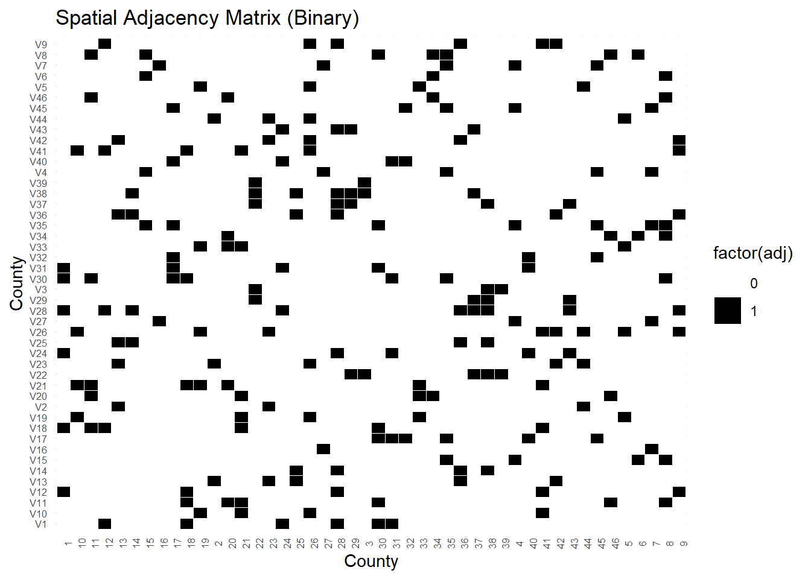
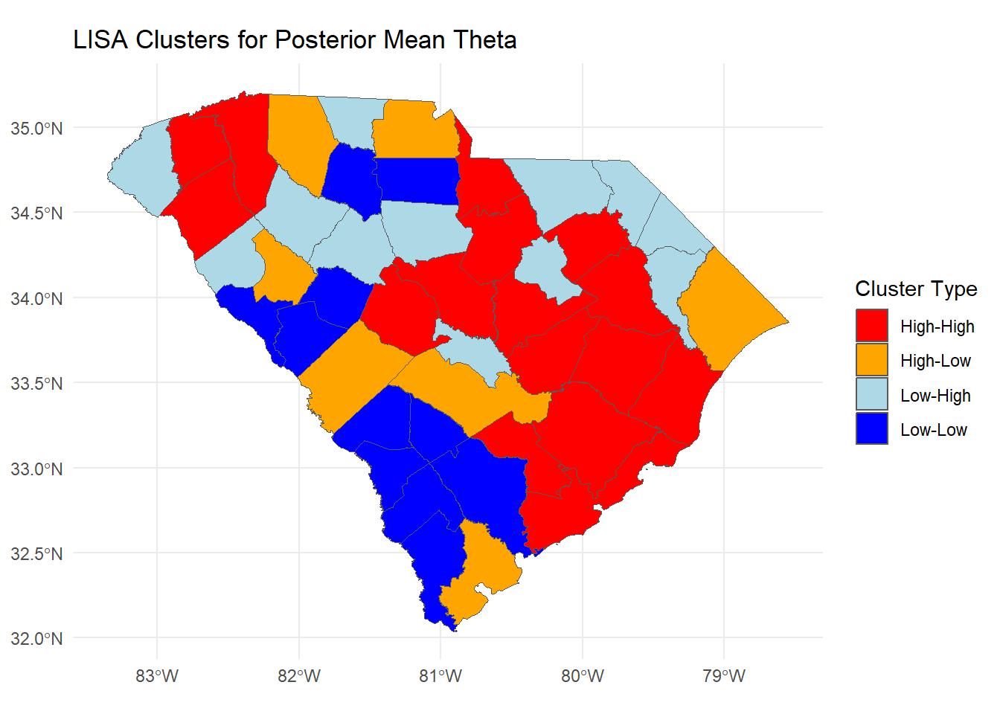

Last updated: 2025-04-28
Checks: 7 0
Knit directory: myproject_scframework/
This reproducible R Markdown analysis was created with workflowr (version 1.7.1). The Checks tab describes the reproducibility checks that were applied when the results were created. The Past versions tab lists the development history.
Great! Since the R Markdown file has been committed to the Git repository, you know the exact version of the code that produced these results.
Great job! The global environment was empty. Objects defined in the global environment can affect the analysis in your R Markdown file in unknown ways. For reproduciblity it’s best to always run the code in an empty environment.
The command set.seed(20241205) was run prior to running
the code in the R Markdown file. Setting a seed ensures that any results
that rely on randomness, e.g. subsampling or permutations, are
reproducible.
Great job! Recording the operating system, R version, and package versions is critical for reproducibility.
Nice! There were no cached chunks for this analysis, so you can be confident that you successfully produced the results during this run.
Great job! Using relative paths to the files within your workflowr project makes it easier to run your code on other machines.
Great! You are using Git for version control. Tracking code development and connecting the code version to the results is critical for reproducibility.
The results in this page were generated with repository version e3bf7bf. See the Past versions tab to see a history of the changes made to the R Markdown and HTML files.
Note that you need to be careful to ensure that all relevant files for
the analysis have been committed to Git prior to generating the results
(you can use wflow_publish or
wflow_git_commit). workflowr only checks the R Markdown
file, but you know if there are other scripts or data files that it
depends on. Below is the status of the Git repository when the results
were generated:
Ignored files:
Ignored: .Rproj.user/
Ignored: data/data_list_august.RData
Ignored: data/fit_allaugust.RData
Ignored: data/logbetapop.RData
Ignored: data/mean_theta_with.RData
Ignored: data/sc_counties_merged.RData
Ignored: stan_allcounties.RData
Ignored: stan_allcounties.Rmd
Ignored: stan_output.RData
Untracked files:
Untracked: data/eta_list.RDS
Untracked: data/merged_predictions_observed.RDS
Untracked: data/posterior_samples.RDS
Untracked: data/unique_county_population.csv
Untracked: myproject_clean/
Note that any generated files, e.g. HTML, png, CSS, etc., are not included in this status report because it is ok for generated content to have uncommitted changes.
These are the previous versions of the repository in which changes were
made to the R Markdown (analysis/spatial_clustering.Rmd)
and HTML (docs/spatial_clustering.html) files. If you’ve
configured a remote Git repository (see ?wflow_git_remote),
click on the hyperlinks in the table below to view the files as they
were in that past version.
| File | Version | Author | Date | Message |
|---|---|---|---|---|
| Rmd | e3bf7bf | JMitic01 | 2025-04-28 | wflow_publish(c("analysis/index.Rmd", "analysis/spatial_clustering.Rmd")) |
In this section, we evaluate the spatial structure of posterior mean
theta estimates (mean_theta) across South Carolina
counties. We assess spatial autocorrelation using Moran’s I and identify
local spatial clusters using Local Indicators of Spatial Association
(LISA).
library(sf)
library(spdep)
library(ggplot2)
library(dplyr)
library(tidyr)
# Create neighbors list and spatial weights
load('data/sc_counties_merged.RData')
nb <- poly2nb(sc_counties_merged)
listw <- nb2listw(nb, style = "W", zero.policy = TRUE)
# Create binary adjacency matrix
adj_matrix <- nb2mat(nb, style = "B", zero.policy = TRUE)
adj_df <- as.data.frame(adj_matrix)
adj_df$from <- rownames(adj_df)
adj_long <- pivot_longer(adj_df, -from, names_to = "to", values_to = "adj")
# Plot adjacency matrix
ggplot(adj_long, aes(x = from, y = to, fill = factor(adj))) +
geom_tile(color = "white") +
scale_fill_manual(values = c("0" = "white", "1" = "black")) +
labs(title = "Spatial Adjacency Matrix (Binary)", x = "County", y = "County") +
theme_minimal() +
theme(axis.text.x = element_text(angle = 90, size = 6),
axis.text.y = element_text(size = 6))
# Moran's I for theta with and without population adjustment
moran_result_with <- moran.test(sc_counties_merged$mean_theta, listw)
print("Moran's I for Theta (with population adjustment):")[1] "Moran's I for Theta (with population adjustment):"print(moran_result_with)
Moran I test under randomisation
data: sc_counties_merged$mean_theta
weights: listw
Moran I statistic standard deviate = 1.6422, p-value = 0.05027
alternative hypothesis: greater
sample estimates:
Moran I statistic Expectation Variance
0.128981282 -0.022222222 0.008477342 nb_no <- poly2nb(sc_counties_merged)
listw_no <- nb2listw(nb_no, style = "W", zero.policy = TRUE)
moran_result_without <- moran.test(sc_counties_merged$mean_theta, listw_no)
print("Moran's I for Theta (without population adjustment):")[1] "Moran's I for Theta (without population adjustment):"print(moran_result_without)
Moran I test under randomisation
data: sc_counties_merged$mean_theta
weights: listw_no
Moran I statistic standard deviate = 1.6422, p-value = 0.05027
alternative hypothesis: greater
sample estimates:
Moran I statistic Expectation Variance
0.128981282 -0.022222222 0.008477342 # Compute Local Moran's I (LISA)
lisa_results <- localmoran(sc_counties_merged$mean_theta, listw, zero.policy = TRUE)
sc_counties_merged <- sc_counties_merged %>%
mutate(
local_I = lisa_results[, "Ii"],
local_Z = lisa_results[, "Z.Ii"],
local_p = lisa_results[, "Pr(z != E(Ii))"]
)
# Standardize mean_theta and spatial lag
sc_counties_merged$mean_theta_std <- scale(sc_counties_merged$mean_theta)
sc_counties_merged$lag_mean_theta <- lag.listw(listw, sc_counties_merged$mean_theta, zero.policy = TRUE)
sc_counties_merged$lag_mean_theta_std <- scale(sc_counties_merged$lag_mean_theta)
# Classify into LISA cluster types
sc_counties_merged <- sc_counties_merged %>%
mutate(
quadrant = case_when(
mean_theta_std > 0 & lag_mean_theta_std > 0 ~ "High-High",
mean_theta_std < 0 & lag_mean_theta_std < 0 ~ "Low-Low",
mean_theta_std > 0 & lag_mean_theta_std < 0 ~ "High-Low",
mean_theta_std < 0 & lag_mean_theta_std > 0 ~ "Low-High",
TRUE ~ "Not significant"
)
)
# Plot LISA Clusters
ggplot(sc_counties_merged) +
geom_sf(aes(fill = quadrant)) +
scale_fill_manual(values = c(
"High-High" = "red",
"Low-Low" = "blue",
"High-Low" = "orange",
"Low-High" = "lightblue",
"Not significant" = "gray"
)) +
labs(title = "LISA Clusters for Posterior Mean Theta",
fill = "Cluster Type") +
theme_minimal() ## Discussion of Spatial Clustering
The LISA cluster map reveals notable spatial patterns in the posterior mean theta estimates across South Carolina counties.
High-High clusters (red) are observed across central and southeastern counties, indicating areas where counties with higher-than-expected outcomes are surrounded by neighbors with similarly high outcomes. These regions may represent persistent hotspots that warrant further investigation.
Low-Low clusters (blue) are mainly located in the southwestern parts of the state, suggesting contiguous regions of lower-than-expected posterior theta values.
High-Low counties (orange) represent spatial outliers: counties with relatively high theta values surrounded by neighbors with lower values. These may point to localized surges not reflected in surrounding areas.
Low-High counties (light blue) reflect the opposite pattern, where counties with lower theta values are adjacent to counties with higher-than-expected outcomes.
Overall, the map highlights spatial autocorrelation in the model residuals, suggesting that local spatial factors may continue to influence outcomes even after adjusting for covariates like population size. These findings emphasize the importance of considering local spillover effects and unmeasured regional characteristics when interpreting model predictions.
sessionInfo()R version 4.3.1 (2023-06-16 ucrt)
Platform: x86_64-w64-mingw32/x64 (64-bit)
Running under: Windows 11 x64 (build 26100)
Matrix products: default
locale:
[1] LC_COLLATE=English_United States.utf8
[2] LC_CTYPE=English_United States.utf8
[3] LC_MONETARY=English_United States.utf8
[4] LC_NUMERIC=C
[5] LC_TIME=English_United States.utf8
time zone: America/New_York
tzcode source: internal
attached base packages:
[1] stats graphics grDevices utils datasets methods base
other attached packages:
[1] tidyr_1.3.1 dplyr_1.1.4 ggplot2_3.5.1 spdep_1.3-11
[5] spData_2.3.3 sf_1.0-17 workflowr_1.7.1
loaded via a namespace (and not attached):
[1] gtable_0.3.5 xfun_0.46 bslib_0.7.0 processx_3.8.3
[5] lattice_0.21-8 callr_3.7.6 vctrs_0.6.5 tools_4.3.1
[9] ps_1.7.6 generics_0.1.3 tibble_3.2.1 proxy_0.4-27
[13] fansi_1.0.4 highr_0.11 pkgconfig_2.0.3 KernSmooth_2.23-21
[17] lifecycle_1.0.4 farver_2.1.1 compiler_4.3.1 stringr_1.5.1
[21] git2r_0.33.0 deldir_2.0-4 munsell_0.5.1 getPass_0.2-4
[25] httpuv_1.6.14 htmltools_0.5.8.1 class_7.3-22 sass_0.4.9
[29] yaml_2.3.8 later_1.3.2 pillar_1.9.0 jquerylib_0.1.4
[33] whisker_0.4.1 classInt_0.4-10 cachem_1.0.8 wk_0.9.3
[37] boot_1.3-31 tidyselect_1.2.1 digest_0.6.34 stringi_1.8.3
[41] purrr_1.0.2 rprojroot_2.0.4 fastmap_1.1.1 grid_4.3.1
[45] colorspace_2.1-0 cli_3.6.1 magrittr_2.0.3 utf8_1.2.3
[49] e1071_1.7-14 withr_3.0.0 scales_1.3.0 promises_1.2.1
[53] sp_2.1-4 rmarkdown_2.27 httr_1.4.7 evaluate_0.24.0
[57] knitr_1.48 s2_1.1.7 rlang_1.1.1 Rcpp_1.0.13
[61] glue_1.6.2 DBI_1.2.3 rstudioapi_0.16.0 jsonlite_1.8.8
[65] R6_2.5.1 fs_1.6.3 units_0.8-5